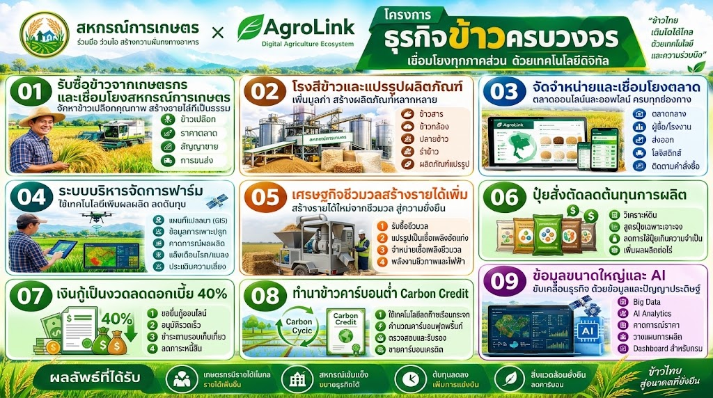

ปลูกข้าวไม่ต้องมีเงินสดล่วงหน้า — ระบบการเงิน + เทคโนโลยี + สหกรณ์ + ตลาด + คาร์บอนเครดิต ที่ออกแบบไว้ให้แล้ว (Integrated Rice Business Project — Introduction Guide)
ฉบับร่างเพื่อพิจารณา — 20 กันยายน 2569
เกษตรกรผู้ปลูกข้าวไทยส่วนใหญ่เผชิญปัญหาเดียวกันมาหลายสิบปี: ต้องหาเงินสดมาลงทุนเองตั้งแต่ต้นฤดู ทั้งค่าเมล็ดพันธุ์ ปุ๋ย ค่าเช่าเครื่องจักร โดยไม่รู้แน่ชัดว่าจะขายข้าวได้ราคาเท่าไรในปลายฤดู หากปีใดราคาตกหรือผลผลิตเสียหาย เกษตรกรต้องแบกรับความเสี่ยงทั้งหมดไว้คนเดียว ขณะที่ปัจจัยการผลิตอย่างปุ๋ยก็มักซื้อผ่านพ่อค้าคนกลางหลายชั้นในราคาสูงกว่าที่ควรจะเป็น และหลังเก็บเกี่ยวฟางข้าวจำนวนมากมักถูกเผาทิ้งเพราะไม่มีช่องทางใช้ประโยชน์ ส่งผลกระทบต่อดินและสร้างมลพิษ PM2.5 ซ้ำเติมปัญหาสิ่งแวดล้อม
ในอีกด้านหนึ่ง ธนาคารและสหกรณ์การเกษตรมีเงินทุนพร้อมปล่อยกู้ ผู้ให้บริการเครื่องจักรและเทคโนโลยีมีอุปกรณ์ทันสมัยพร้อมใช้งาน โรงสีและโรงไฟฟ้าชีวมวลต้องการวัตถุดิบที่มีคุณภาพและตรวจสอบย้อนกลับได้ และตลาดคาร์บอนเครดิตกำลังเติบโตต้องการข้อมูลการผลิตที่น่าเชื่อถือ — แต่ทุกฝ่ายเหล่านี้ไม่เคยถูกเชื่อมเข้าด้วยกันเป็นระบบเดียวที่ทำงานร่วมกันได้จริง
AgroLink จึงถูกออกแบบขึ้นเพื่อเป็น "ตัวเชื่อม" ดิจิทัลที่นำทุกฝ่ายมารวมกัน โดยเริ่มต้นจากคำถามง่ายๆ ว่า: ถ้าเกษตรกรไม่ต้องหาเงินสดมาลงทุนเองเลย แต่ยังคงเป็นเจ้าของผลผลิตและรายได้ทั้งหมดหลังหักต้นทุน จะช่วยให้ระบบการผลิตข้าวของประเทศดีขึ้นได้แค่ไหน — โครงการธุรกิจข้าวครบวงจรนี้คือคำตอบของคำถามนั้น เปิดโครงการนำร่องขนาด 10,000 ไร่ต่อสหกรณ์ ขยายเครือข่ายอย่างต่อเนื่อง โดยมีกลไกทางการเงิน เทคโนโลยี และตลาด ที่ออกแบบและทดสอบไว้ล่วงหน้าแล้ว
"เกษตรกรไม่ต้องใช้เงินสดของตนเองเริ่มต้นฤดูกาล — ใช้ระบบการเงิน + เทคโนโลยี + สหกรณ์ + ตลาด + Carbon Credit เชื่อมกันเป็นระบบเดียว"
โครงการประกอบด้วยกิจกรรมหลัก 4 ส่วนที่ทำงานร่วมกัน:
| ผู้ได้รับประโยชน์ | ประโยชน์หลัก |
|---|---|
| เกษตรกร | ไม่ต้องหาเงินสดลงทุนเอง ลดต้นทุนปุ๋ย เพิ่มผลผลิตจากดินที่ดีขึ้น มีรายได้เสริมจากคาร์บอนเครดิตและฟางข้าว ลดความเสี่ยงจากการกู้นอกระบบ |
| สหกรณ์ | มีบทบาทเป็นศูนย์กลางบริการสมาชิกที่ชัดเจนขึ้น มีรายได้จากการรวบรวมผลผลิต จัดซื้อปัจจัยการผลิต และส่วนแบ่งจากบริการต่างๆ โดยไม่ต้องแบกความเสี่ยงด้านเงินทุนเอง |
| ธนาคาร/ผู้ให้กู้ | ปล่อยสินเชื่อที่มีข้อมูลติดตามกิจกรรมการผลิตแบบดิจิทัลรองรับ ลดความเสี่ยงหนี้เสียเมื่อเทียบกับสินเชื่อเกษตรแบบเดิม |
| สิ่งแวดล้อม | ลดการเผาตอซัง/ฟางข้าว ลดการใช้น้ำและก๊าซเรือนกระจกจากนาข้าว ลดการใช้ปุ๋ยเกินความจำเป็น |
| ประเทศ/สังคม | ยกระดับระบบผลิตข้าวไทยให้มีมาตรฐาน ตรวจสอบย้อนกลับได้ แข่งขันได้ในตลาดที่ให้ความสำคัญกับความยั่งยืนมากขึ้นทุกปี |
ข้อควรเข้าใจให้ตรงกัน: คำว่า "ไม่ต้องลงทุนเงินสด" หมายถึงเกษตรกรไม่ต้องควักเงินสดของตนเองล่วงหน้าเท่านั้น ไม่ใช่ต้นทุนเป็นศูนย์ ต้นทุนที่แท้จริงยังเกิดขึ้นเสมอ เพียงแต่มีธนาคาร สหกรณ์ และผู้ให้บริการเป็นผู้จัดหาเงินทุนล่วงหน้าแทน แล้วรับชำระคืนจากรายได้หลังขายผลผลิตหรือขายคาร์บอน/ฟางในภายหลัง
เกษตรกรรับเงินทุนหมุนเวียนจากธนาคารหรือสหกรณ์เป็นงวดตามกิจกรรมจริง (เตรียมแปลง → ปลูก → บำรุงรักษา → เก็บเกี่ยว) แทนการหาเงินสดมาลงทุนเองทั้งฤดูกาล เมื่อขายข้าวได้ ระบบจะหักชำระคืนเงินทุนและค่าบริการต่างๆ โดยอัตโนมัติผ่านแพลตฟอร์ม ก่อนโอนเงินส่วนที่เหลือให้เกษตรกร
นี่คือส่วนที่ออกแบบไว้อย่างรอบคอบที่สุด: ผู้ให้บริการปรับพื้นที่ด้วยเลเซอร์ และผู้ให้เช่าเซนเซอร์วัดระดับน้ำ เป็นผู้กู้เงินจากธนาคารมาลงทุนอุปกรณ์เอง และรับภาระดอกเบี้ยเอง เกษตรกรไม่จ่ายเงินสดส่วนนี้เลยแม้แต่บาทเดียว แล้วค่อยๆ ผ่อนชำระค่าบริการคืนเป็นรายปีตลอด 5 ปี จากรายได้ 2 ทางเท่านั้นคือ การขายคาร์บอนเครดิต และการขายฟางข้าว — ไม่แตะรายได้จากการขายข้าวเลย
เหตุผลที่โครงสร้างนี้ทำได้จริง: ผู้ให้บริการอุปกรณ์มีลูกค้าจำนวนมากในเครือข่ายเดียวกัน ทำให้กู้เงินธนาคารได้ง่ายกว่าเกษตรกรรายย่อยแต่ละคนที่ไปกู้เอง ความเสี่ยงด้านเครดิตจึงถูกยกไปอยู่กับผู้ที่บริหารความเสี่ยงนี้เป็นธุรกิจหลักโดยตรง ไม่ใช่เกษตรกร
| กิจกรรม | ใครเป็นผู้จ่ายเงินก่อน | เกษตรกรชำระคืนจากอะไร |
|---|---|---|
| การผลิตข้าว | ธนาคาร/สหกรณ์ | รายได้จากการขายข้าวในฤดูนั้น |
| ปุ๋ยสั่งตัด | รวมอยู่ในวงเงินผลิต | รายได้จากการขายข้าว (ต้นทุนที่ลดลงแล้ว) |
| อุปกรณ์ AWD (ปรับพื้นที่/เซนเซอร์) | ผู้ให้บริการอุปกรณ์ (กู้เอง) | รายได้คาร์บอนเครดิต + ขายฟาง ทยอย 5 ปี |
เป้าหมายการเติบโตของโครงการกำหนดเป็น 3 ช่วง ตามความพร้อมของเครือข่ายที่คาดว่าจะเปลี่ยนไปเมื่อฐานใหญ่ขึ้น: ปีที่ 1-5 เติบโตปีละ 50% (ช่วงบุกเบิก ฐานยังเล็ก) ปีที่ 6-10 เติบโตปีละ 25% (ช่วงขยายตัว) และปีที่ 11-15 เติบโตปีละ 10% (ช่วงเครือข่ายเข้าสู่ความอิ่มตัวและเน้นความมั่นคง) โดยเริ่มต้นจากปีที่ 1 ที่ 120,000 ไร่ (เทียบเท่าประมาณ 12 สหกรณ์ ขนาดสหกรณ์ละ 10,000 ไร่)
| ปี | พื้นที่สะสม (ไร่) | เทียบเท่าสหกรณ์ (10,000 ไร่/แห่ง) | อัตราเพิ่มจากปีก่อน |
|---|---|---|---|
| 1 | 120,000 | ≈12 แห่ง | — |
| 2 | 180,000 | ≈18 แห่ง | +50% |
| 3 | 270,000 | ≈27 แห่ง | +50% |
| 4 | 405,000 | ≈41 แห่ง | +50% |
| 5 | 608,000 | ≈61 แห่ง | +50% |
| 6 | 759,000 | ≈76 แห่ง | +25% |
| 7 | 949,000 | ≈95 แห่ง | +25% |
| 8 | 1,187,000 | ≈119 แห่ง | +25% |
| 9 | 1,483,000 | ≈148 แห่ง | +25% |
| 10 | 1,854,000 | ≈185 แห่ง | +25% |
| 11 | 2,039,000 | ≈204 แห่ง | +10% |
| 12 | 2,243,000 | ≈224 แห่ง | +10% |
| 13 | 2,468,000 | ≈247 แห่ง | +10% |
| 14 | 2,714,000 | ≈271 แห่ง | +10% |
| 15 | 2,986,000 | ≈299 แห่ง | +10% |
ตรวจสอบขนาดเทียบบริบทประเทศ: พื้นที่นาปรังทั่วประเทศมีประมาณ 12.2 ล้านไร่ (ข้อมูล สศก.) พื้นที่เป้าหมายในปีที่ 15 (≈2.99 ล้านไร่) จึงเทียบเท่าประมาณ 24.5% ของพื้นที่นาปรังทั้งประเทศ หรือประมาณ 4.2% ของพื้นที่นาข้าวทั้งหมดทุกฤดูรวมกัน (นาปี+นาปรัง ≈70-73 ล้านไร่) — เป็นเป้าหมายที่ทะเยอทะยานแต่อยู่ในวิสัยที่พอวางแผนได้จริงมากกว่าอัตราเดิม (+50% ตลอด 15 ปี) อย่างมีนัยสำคัญ อย่างไรก็ตามยังต้องมีการขยายทีมงาน เงินทุนหมุนเวียน และเครือข่ายสหกรณ์ให้สอดคล้องกับอัตราเร่งในแต่ละช่วง โดยเฉพาะช่วงปีที่ 6-10 ที่เครือข่ายจะโตจาก 61 เป็น 185 สหกรณ์ ซึ่งเป็นช่วงที่ต้องการการลงทุนขยายทีมภาคสนามมากที่สุด
โครงการธุรกิจข้าวครบวงจรโดย AgroLink คือความพยายามเปลี่ยนระบบผลิตข้าวไทยจาก "เกษตรกรลงทุนเอง แบกความเสี่ยงเอง" ไปสู่ระบบที่มีการเงิน เทคโนโลยี ตลาด และกลไกด้านสิ่งแวดล้อมทำงานร่วมกันเป็นหนึ่งเดียว โดยออกแบบให้เกษตรกรเป็นศูนย์กลางที่ได้รับประโยชน์สูงสุด ไม่ต้องแบกรับภาระเงินทุนหรือความเสี่ยงทางการเงินที่ไม่จำเป็น ขณะที่ทุกฝ่ายที่เกี่ยวข้อง — สหกรณ์ ธนาคาร ผู้ให้บริการเทคโนโลยี ตลาดรับซื้อ และภาคสิ่งแวดล้อม — ต่างได้รับประโยชน์ร่วมกันในระบบเดียวกันนี้
คู่มือฉบับนี้เป็นเอกสารเบื้องต้นสำหรับพิจารณาและทำความเข้าใจภาพรวมโครงการ รายละเอียดเชิงตัวเลขเฉพาะด้าน (แผนธุรกิจฉบับเต็ม แผนรายได้ 5 ปี งบการเงิน Pre-Seed) มีอยู่ในเอกสารประกอบชุดอื่นของ AgroLink ผู้สนใจเข้าร่วมโครงการในฐานะสหกรณ์ เกษตรกร หรือพันธมิตรทางธุรกิจ สามารถติดต่อทีมงาน AgroLink เพื่อขอข้อมูลเพิ่มเติมได้
ไม่ว่าจะในฐานะสหกรณ์ เกษตรกร หรือพันธมิตรทางธุรกิจ ติดต่อทีมงาน AgroLink เพื่อขอข้อมูลเพิ่มเติมได้ทันที